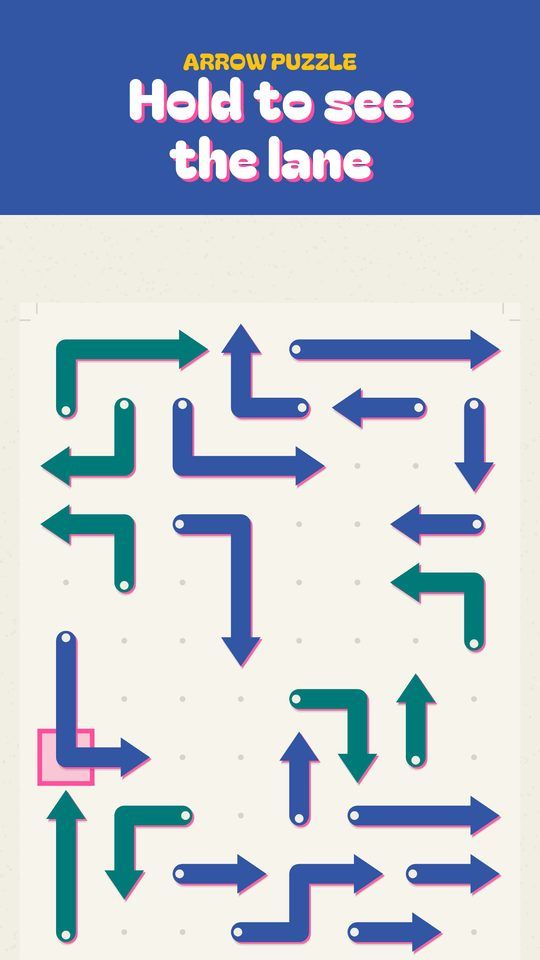

Arrow puzzles (also called tap-away, arrows-out or unblock arrow games) look simple: tap an arrow and it flies off the board the way it points. The catch is that it can only leave if nothing is in its lane. Tap one that is blocked and it bumps back, and most games take a life for that. These tips come from building the boards in Slipway, where every board is built backwards from an empty grid, so we know exactly what makes them hard.
Before tapping anything, scan for arrows whose whole lane, from the head to the edge of the board, is empty. Those are the only safe moves. On a big board about a third of the arrows are free from the start; the rest wait on them.
Arrows along the rim that point outward almost always have a clear lane. Clearing them first opens lanes for the arrows behind them, so the board gets easier with each move.
When an arrow you want is blocked, look along its lane and find the first piece in the way. Clear that one first. If that one is blocked too, follow the chain. Hard boards are long chains: ten or more arrows that each wait on the next.

Two arrows pointing into each other's lanes can never both go first. Since every fair board is solvable, one of them must be freed some other way, usually by an arrow crossing its lane. Look past the pair, not at it.
In games with bending (snake) arrows, only the head's lane matters: the body follows the same path out. A bent arrow often blocks two lanes at once, so clearing it can free two other arrows in one move.
On a 50-arrow board, don't hunt all over the grid. Pick a corner, empty it fully, then move to the next region. You will see free arrows faster and miss fewer of them.
There are no dead ends in a well-made arrow puzzle: removing an arrow only ever frees others. So the only way to lose is a blocked tap. If no free arrow is obvious, take another look. One is always there.
Try it on Slipway. A free offline arrow puzzle with arrows that bend, a new Daily Print every day and a picture printed for every board you clear.
Get Slipway on Google Play